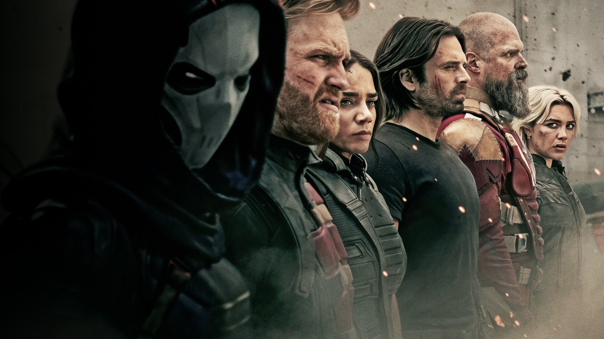
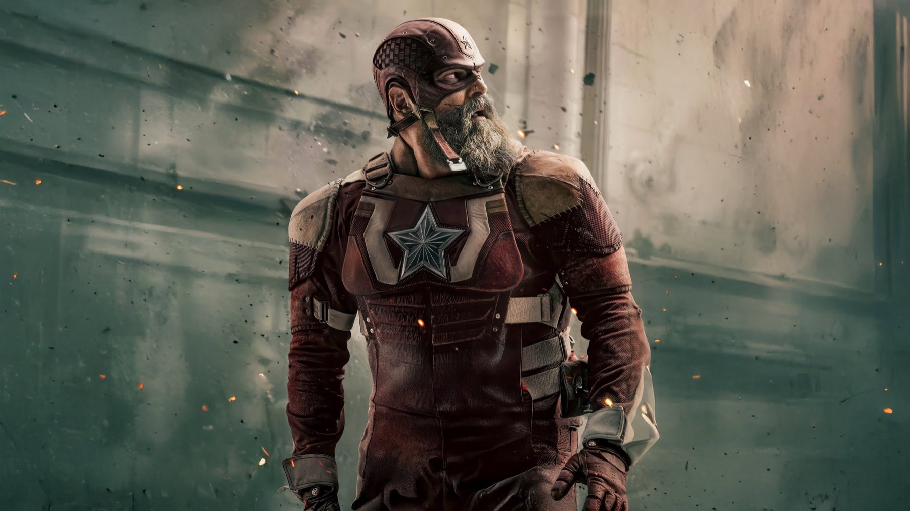

Thunderbolts*
Una squadra di antieroi scartati, un nemico che vive nella testa delle persone e una Florence Pugh che si prende il film: il Marvel più umano degli ultimi anni
Dopo anni di film Marvel accolti con stanchezza crescente, Thunderbolts* arriva quasi in punta di piedi e finisce per essere una delle sorprese più piacevoli dell'universo cinematografico. Uscito in Italia il 30 aprile 2025 e diretto da Jake Schreier, il film chiude la Fase 5 con una squadra di personaggi secondari, scartati e un po' patetici, e con un tema che i cinecomic avevano sempre sfiorato senza mai affrontarlo davvero: la salute mentale.
Di cosa parla Thunderbolts*?
Yelena Belova, l'assassina addestrata nella Stanza Rossa che avevamo conosciuto in Black Widow, è stanca e vuota. Durante una missione per conto della spregiudicata Valentina Allegra de Fontaine, interpretata da Julia Louis-Dreyfus, finisce in una trappola insieme ad altri mercenari: John Walker, Ghost e Taskmaster. Per uscirne vivi saranno costretti a collaborare, con l'aiuto del Soldato d'Inverno Bucky Barnes, del Red Guardian e di un misterioso uomo di nome Bob.
Nel cast tornano Florence Pugh, Sebastian Stan, David Harbour, Wyatt Russell e Olga Kurylenko, mentre la vera novità è Lewis Pullman, che dà al suo personaggio una fragilità sorprendente. La sceneggiatura è di Eric Pearson e Joanna Calo, una delle autrici di The Bear.
Florence Pugh e un Marvel diverso
Il film appartiene a Florence Pugh. La sua Yelena è disillusa, ironica, incapace di credere a qualcosa, e l'attrice riesce a far passare tutta la sua malinconia anche nelle scene d'azione. Per la sequenza iniziale ha voluto girare di persona il salto dal grattacielo Merdeka 118 di Kuala Lumpur, uno dei più alti del mondo, dopo aver insistito a lungo con la produzione: un dettaglio che dice molto dell'approccio fisico e concreto del film.
È proprio la concretezza la qualità migliore di Thunderbolts*. Meno effetti visivi a tutto schermo, più corpi, stanze, dialoghi. E soprattutto un cattivo diverso dal solito: senza anticipare nulla, la minaccia principale nasce dalla depressione e dalla solitudine, e il film trova un modo visivo forte per raccontarle.
Il primo film Marvel in cui il nemico più pericoloso è la solitudine.
Dalle "stanze della vergogna" al Vuoto
L'idea migliore del film è dare una forma alle ferite dei personaggi. Le cosiddette stanze della vergogna mettono ognuno davanti ai ricordi che cerca di non guardare, e il Vuoto, il lato oscuro legato a Bob, funziona come la rappresentazione di una depressione e di un'insicurezza che il personaggio non riesce a scrollarsi di dosso, come spiega anche la pagina di Wikipedia dedicata al film. Il punto non è la novità del tema, ma il fatto che il film lo prenda sul serio: l'azione smette di essere un fine e diventa il modo in cui i personaggi evitano di parlarsi.
Dietro la scrittura c'è un lavoro a più mani: Pearson firma soggetto e sceneggiatura, Calo la sceneggiatura, e già nel marzo 2023 Lee Sung Jin raccontava di lavorare alle riscritture su richiesta di Schreier. Per noi si sente: le scene più quiete, quelle in cui i personaggi smettono di combattere e iniziano a parlare, sono la parte che ricorderemo di più, molto più dello scontro finale.
Come è stato costruito
Le riprese sono iniziate il 26 febbraio 2024 e si sono chiuse intorno alla metà di giugno dello stesso anno, tra gli studi Trilith e Atlanta Metro in Georgia, lo Utah e Kuala Lumpur, dove si sono girate le scene intorno a Merdeka 118. Il titolo di lavorazione era Oops All Berries. La fotografia è di Andrew Droz Palermo, mentre la musica è dei Son Lux, registrata agli Abbey Road Studios di Londra nei primi giorni di febbraio 2025.
Girare in luoghi reali come Kuala Lumpur e lo Utah, oltre che negli studi, si traduce per noi in un film meno levigato del solito. Anche per questo il passaggio al grande scontro, quando arriva, ci è sembrato meno personale di quel che era prima.
Cosa non funziona
Non tutti si sono lasciati convincere. Il Cineocchio lo ha bocciato come frettoloso e meccanico, con personaggi poco memorabili, mentre CineAvatar gli ha dato 4 stelle su 5 per la capacità di ritrovare lo spirito dei Marvel migliori. Noi stiamo nel mezzo: alcuni membri della squadra restano abbozzati, Ghost e Taskmaster su tutti, e la battaglia finale ricade in parte nelle formule del genere.

Il botteghino e dove vederlo
Il pubblico lo ha accolto meglio di quanto dicano gli incassi. Secondo Rotten Tomatoes, a ottobre 2026, la critica gli dà l'88% su 385 recensioni e il pubblico il 93%; la sintesi della pagina parla di una banda di sfavoriti con Florence Pugh come punto di forza. Al botteghino, secondo Wikipedia a ottobre 2026, il film ha incassato circa 382,4 milioni di dollari nel mondo a fronte di un budget di 180 milioni, cifra a cui va aggiunto un investimento di marketing stimato tra 75 e 100 milioni: numeri che per Marvel Studios sono stati una delusione. Un peccato, perché è uno dei capitoli più riusciti degli ultimi anni.
Per recuperarlo: il film è uscito in download digitale il 1° luglio 2025, in home video il 29 luglio 2025 e su Disney+ dal 27 agosto 2025. A ottobre 2026 in Italia si trova in abbonamento su Disney+ e a noleggio su Apple TV, Timvision, Rakuten TV e Prime Video.
Se da un lato alcuni personaggi restano di contorno e il finale torna sui binari soliti, dall'altro Thunderbolts* è il Marvel più umano e sincero da molto tempo, con una Florence Pugh strepitosa e il coraggio di parlare di depressione senza retorica.
Domande frequenti
Cosa significa l'asterisco nel titolo Thunderbolts*?
L'asterisco viene spiegato alla fine del film, quando la squadra cambia nome; dopo il primo weekend Marvel ha esplicitato il significato nei materiali ufficiali, senza cambiare formalmente il titolo.
Florence Pugh ha girato davvero il salto dal grattacielo?
Sì: l'attrice ha eseguito di persona il salto dal grattacielo Merdeka 118 di Kuala Lumpur, dopo aver insistito a lungo con Marvel Studios.
Dove vedere Thunderbolts* in streaming?
In abbonamento su Disney+ e a noleggio su Apple TV, Timvision, Rakuten TV e Prime Video.